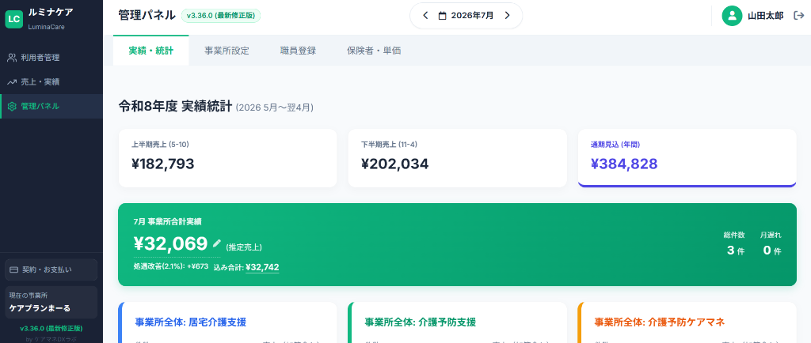
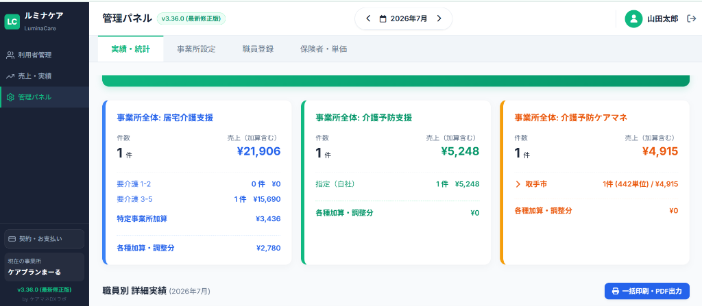
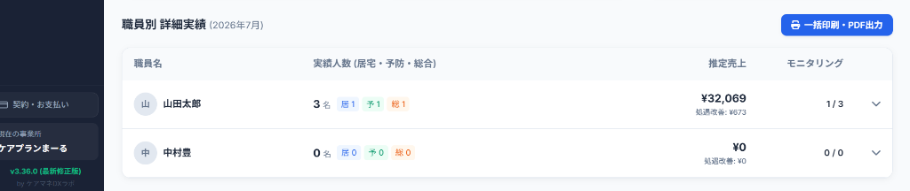
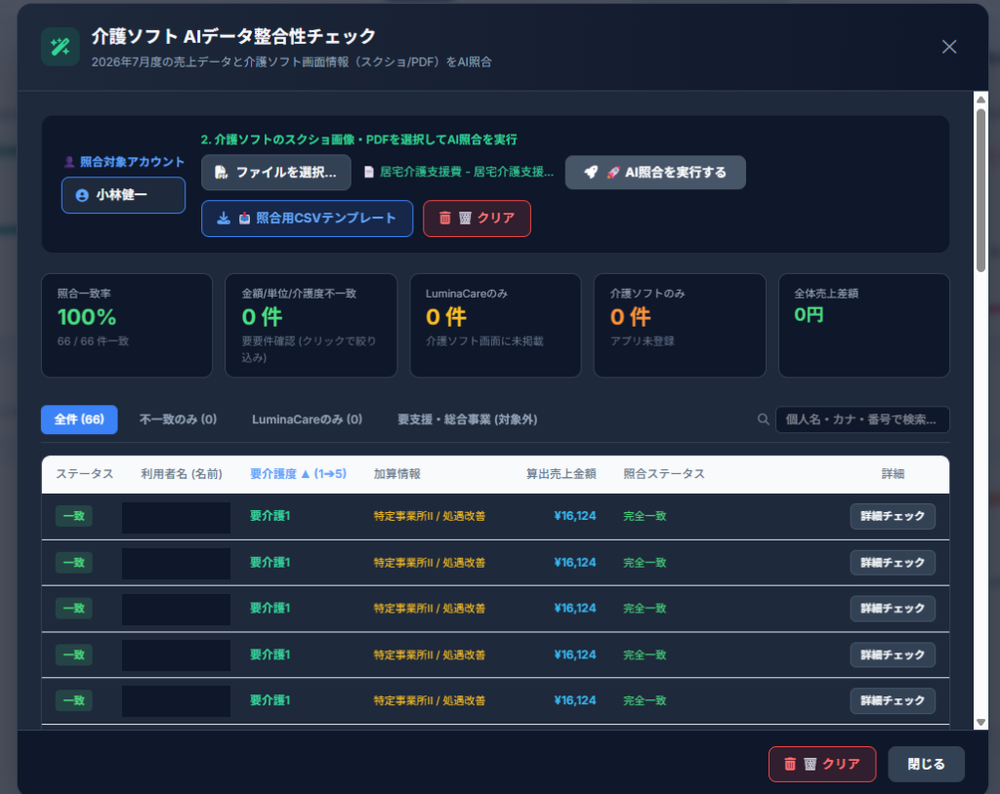
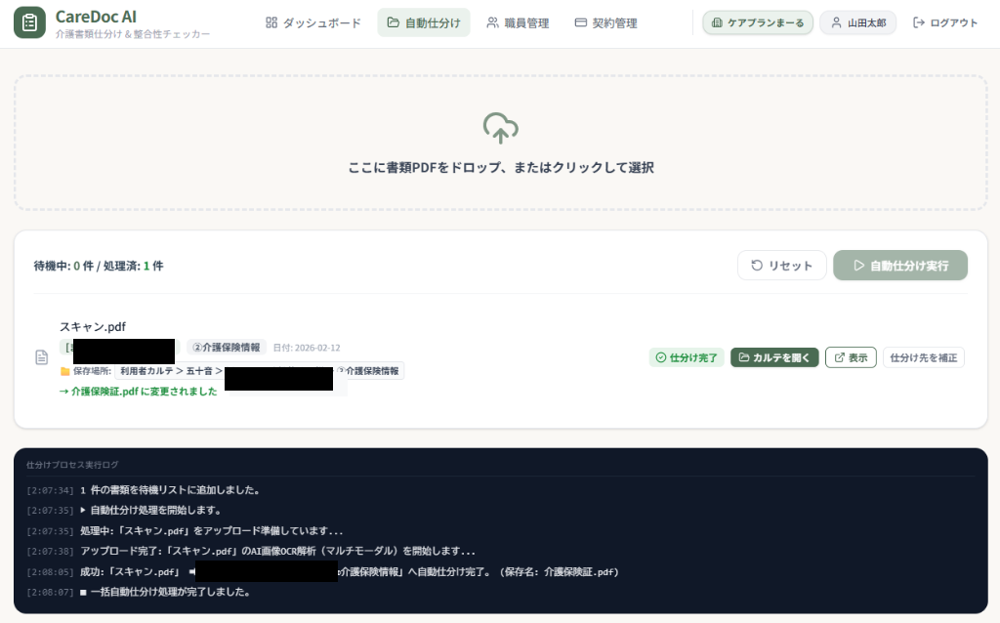

既存の介護ソフト・請求ソフトはそのまま。書類の自動仕分けや不備チェックなど、
ソフトだけでは解決しない手作業に特化して効率化し、ケア本来の時間を作ります。
「LuminaCare（ルミナケア）」は、介護事業所における利用者の介護保険認定期間の管理、各種加算・請求管理、実績照合を効率化・自動化する総合支援システムです。

「申請中」「今月迄」「有効」のステータスバッジと契約・認定有効期間を緑枠・カラー判定表示し、資格切れ・更新漏れを防止します。
今月認定期限を迎える利用者の短期目標期限（例: 2026/07/31）を赤文字ハイライトで視覚的に警告します。
入院時情報連携加算(I)や初回加算、月次モニタリング実施日をテーブル上で直接ドロップダウン選択・登録が可能です。
通常請求 / 請求対象 / 月遅れ請求のステータス切替と、ワンタップでの月遅れ請求処理に対応しています。


当月の確定売上額や内訳、個別データをリアルタイムで集計し、売上状況を一目で把握できます。
総請求件数やモニタリングの完了・未完了件数、進捗率をリアルタイムに自動追跡・確認できます。
「居宅介護支援（要介護：青枠）」「介護予防支援（指定：緑枠）」「総合事業（委託：橙枠）」を明確に色分けし、見やすく整理しています。
モニタリングの実施/未実施状況、各種個別加算、月遅れ請求対象者のリストをワンタップでスムーズに確認可能です。
自治体や地域包括支援センター（例: 取手西地域包括など）ごとの実績・売上・単位数を個別かつ直感的に確認できます。



上半期売上 (5-10月: ¥182,793)、下半期売上 (11-4月: ¥202,034)、通期年間売上見込 (¥384,828) を瞬時に可視化し経営管理を強力サポート。
当月確定推定売上（¥32,069）、処遇改善加算 (2.1%: +¥673)、込み合計（¥32,742）、総請求件数（3件）を全自動で算出・表示します。
「事業所全体：居宅介護支援（¥21,906）」「介護予防支援（¥5,248）」「介護予防ケアマネ・取手市（¥4,915）」の売上・単位数を一目で分析可能。
職員ごとの担当実績人数（居宅・予防・総合の内訳）、推定売上、処遇改善額、モニタリング完了率（例: 山田太郎 1/3件）を個別集計。
職員別詳細実績レポートや経営分析データを「一括印刷・PDF出力」ボタン一つで即座に帳票化・ダウンロードできます。

既存の介護ソフト画面情報（スクリーンショットやPDF）を取り込み、売上データや契約内容との整合性をAIが自動解析・高速照合します。
全体の照合一致率（例: 100% 66/66件一致）や、金額/単位/要介護度の不一致、未登録データをダッシュボード形式でひと目で把握できます。
「全件」「不一致のみ」「LuminaCareのみ」「要支援・総合事業（対象外）」タブで確認したいデータのみをワンクリック抽出。
手作業による転記ミスや請求漏れ・要介護度相違を自動検出し、請求業務の精度向上と監査対策を強力にサポートします。
カラーバッジ判定と赤文字警告アラートにより、介護保険証や短期目標の資格切れ・手続き漏れを100%防止。
初回加算や入院時情報連携加算の算定機会を逃さず、月遅れ請求もワンタップで確実・迅速に回収可能。
実績照合や請求区分チェックの手間を削減し、月末月初の請求管理にかかる残業時間を大幅短縮。
事業所全体の売上推移や職員別担当実績・処遇改善額がグラフ・数値で一目瞭然となり、収益最大化を強力支援。
介護ソフト画面やPDFをAIが高速照合し、手作業による誤入力やデータ不一致を未然に自動遮断。
「CareDoc AI」は、介護現場で毎日発生する書類の自動判別・保管に加え、アセスメントシート・ケアプラン・担当者会議録（3点セット）の揃い状況や日付の時系列整合性をAIが自動判定する次世代管理システムです。

スキャンしたPDFを投入するだけで自動読み込み。ファイル名の変更やフォルダ振分けが自動で完了します。
文字情報だけでなく全体のフォーマットを解析。氏名・書類種別（介護保険証等）を高精度で自動識別します。
仕分け結果や実行プロセスを画面下部ログで透明に表示。手動補正ボタンも完備しています。
書類整理・リネーム・フォルダ移動に費やしていた時間を90%以上カット。
3点セット不備や日付逆転による減算リスクをゼロへ。
人為的ミスを防ぎ、実地指導時にも慌てず即座に書類を提示可能。
ケアマネジャーや介護スタッフが本業のケア業務に集中できる環境を実現。
ケアマネジャー様の日々の業務負担を軽減するため、現場で役立つ5つの便利Webアプリケーションを完全無料・ユーザー登録不要で公開しています。ぜひご活用ください。
移動中やケアの合間に、声で手軽にタスクやメモを音声記録・自動整理。忙しいケアマネジャーの業務漏れや訪問メモ忘れを防ぐ直感ツールです。
特定事業所加算等の要件である事例検討会・研修会議録をフォーム入力でスマート作成。A4用紙への印刷やPDF保存にすぐ対応できます。
モニタリング記録や支援経過入力で活用できる豊富な文例・定型表現をワンクリックで生成＆コピー。日々の文章作成時間を大幅削減します。 ご自身で使う定型文を登録してご使用ください。
ケアプラン作成に必要なジェノグラム（家系図）や住宅改修・訪問調査用の間取り図を直感的に作図・出力。スムーズな業務作成をサポートします。
複雑な介護報酬加算の要件判定チェックと、ご利用者の入院・退院スケジュールの統合管理を正確かつ効率的に行えるサポートアプリです。
医療・介護における高度な個人情報（利用者カルテ・ケアプラン・保険情報等）を保護するため、厳格なセキュリティ基盤と運用ポリシーを徹底しています。
通信上のデータはすべて金融機関と同等の256bit SSL/TLS暗号化により徹底防護。第三者によるデータの盗聴・改ざんを完全にシャットアウトします。
CareDoc AI等の解析データは国内セキュリティ基準を満たした保護環境で処理。取り込んだ情報が意図せず外部AIの学習データとして使われるリスクはありません。
「医療・介護関係事業者における個人情報の適切な取扱いのためのガイドライン」を順守し、個人情報の安全管理措置および運用基準を満たしています。
事業所内での権限別アクセス管理および操作ログ追跡に対応。社会福祉法人や大手事業所の「セキュリティチェックシート」の提出にも個別対応します。
社会福祉法人様や大手事業者様の導入事前監査・要件確認シートの記入提出に迅速に対応いたします。
セキュリティ、既存ソフトとの併用、導入手順についてお寄せいただく代表的な質問をまとめました。
ケアマネジャーの皆様が日々向き合っていらっしゃる「大量の書類整理」や「複雑なシステム管理」。 一つひとつの現場で業務フローも使用しているソフトも異なるため、既存の基幹システムだけではカバーしきれない手作業が残ってしまうのが現状です。
だからこそ「ケアマネDXラボ」では、既存システムを活かしながら手の届かない現場作業（ファイル自動仕分けや不備チェック等）をピンポイントで補完するアプリ開発と、現場に寄り添った継続サポートを行っております。業務の柔軟なデジタル補完を通じて、本来注力すべきケアへ向き合える環境をお届けします。
アプリのデモ体験、導入のご相談、お見積もりのご依頼など、どのような内容でも丁寧に対応いたします。